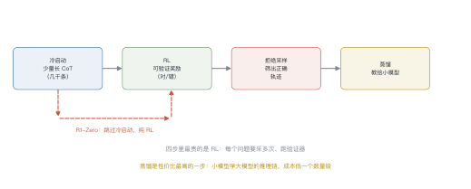
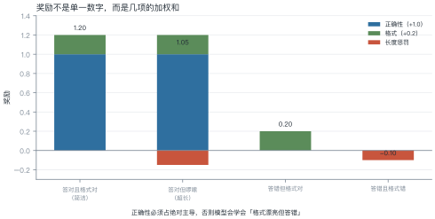
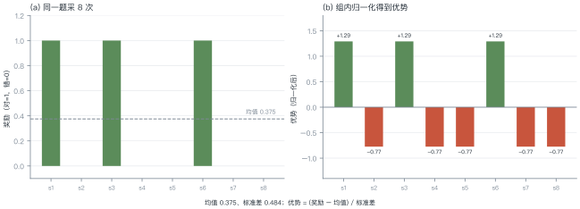
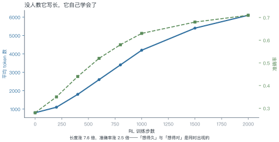

第 21 讲 推理模型训练¶
本讲位置
第 20 讲讲了"推理时多花算力"，本讲讲"怎么把这种能力训进权重"。核心工具只有一个：可验证奖励 + 强化学习。
📅 事实核查至 2026-11
o1（OpenAI, 2024）、R1/R1-Zero（DeepSeek, 2025）、GRPO（DeepSeekMath, 2024）、过程奖励（Lightman et al., 2023）均已核对原文。
学习目标¶
学完本讲，你应该能够：
- 说出推理模型训练的四步流水线，以及 R1-Zero 跳过了哪一步；
- 设计一组可验证奖励，并说明各项权重的取舍；
- 手算 GRPO 的组内优势；
- 解释"回答长度自发增长"这一现象。
0 直觉：从"想得久"到"训得会想"¶
第 20 讲的做法是推理时多采样、多投票——能力没变，只是用得更好。
推理模型走得更远：把这个能力训进权重。训练后的模型，默认就会写很长的推理链，而且写得比提示工程引导出来的更有效。
关键区别：
| 测试时扩展 | 推理模型训练 | |
|---|---|---|
| 能力来源 | 已有能力 + 搜索 | 权重里学会了"怎么想" |
| 成本 | 每次推理都贵 | 训练一次，推理仍贵但更高效 |
| 上限 | 受基座能力限制 | 可以超过人类示范 |
一句话总结
推理模型 = 用可验证奖励做 RL，让模型自己发现"长推理有用"。
1 训练流水线¶

1.1 四个阶段¶
| 阶段 | 数据 | 作用 |
|---|---|---|
| 冷启动 | 几千条长 CoT | 给模型一个"长推理"的起点，避免 RL 早期全是乱码 |
| RL | 问题 + 验证器 | 学会"怎么想才能答对" |
| 拒绝采样 | 同一问题采多次，留正确的 | 生成高质量 SFT 数据 |
| 蒸馏 | 大模型的推理链 | 把能力搬到小模型 |
1.2 R1-Zero 的意义¶
DeepSeek 做了一个大胆的实验：完全跳过冷启动，直接从基座模型开始 RL。
结果出人意料：模型自发学会了延长思考、自我检查、甚至出现"等等，让我重新想想"这样的反思语句。
这说明：长推理不是教出来的，是在"答对给奖励"的压力下自己发现的。
2 RLVR：可验证奖励¶

可验证奖励（RLVR）的核心：用规则或测试用例判定对错，不需要人类打分。
| 任务 | 验证器 |
|---|---|
| 数学 | 答案匹配（数值/表达式等价） |
| 代码 | 单元测试 |
| 逻辑 | 约束满足检查 |
| 格式 | 正则 / JSON 解析 |
例 21.1 算一个样本的奖励¶
某条回答：答案正确、格式合规、但超长（8000 token，上限 6000）。
对照：答错但格式对 → \(0+0.2=0.2\)；答错且格式错 → \(0+0-0.1=-0.1\)。
为什么要有长度惩罚：不加的话，模型会发现"写得越长越可能蒙对"，于是无限啰嗦。
为什么格式奖励要小：格式只是手段，不是目的。权重给大了，模型会为了格式牺牲正确性。
3 GRPO：不要价值网络¶

PPO 需要一个价值网络估计基线，多一个模型、多一份显存。GRPO 的做法更省：同一道题采一组，用组内均值当基线。
例 21.2 手算组内优势¶
同一题采 8 次，奖励 \(\boldsymbol{r}=[1,0,1,0,0,1,0,0]\)。
第一步，均值：
第二步，标准差：
第三步，优势：
怎么读：答对的样本被正向强化（+1.29），答错的被抑制（−0.77）。幅度不对称——因为答对的是少数。
从这个例子里能读出三件事
- 基线是"这道题的平均水平"，不是全局平均——同一题内的比较更公平；
- 全对或全错时标准差为 0：这一组没有信号，直接丢弃；
- 采样数决定信号质量：8 个里只有 3 个对，方差大，优势不稳。
4 长度为什么会长¶

4.1 三种解释¶
- 探索的副产品：RL 鼓励尝试新路径，长推理能容纳更多尝试；
- 验证行为的载体：模型学会了"算完检查一遍"，检查需要额外 token；
- 奖励塑形：答对才给分，而长推理提高了答对概率——于是长度被间接强化。
4.2 代价¶
长度涨 7.6 倍，推理成本也涨 7.6 倍。所以后来的工作都在做"长度控制"：在奖励里加长度惩罚，或训练模型"该停就停"。
5 冷启动与蒸馏¶
例 21.3 蒸馏的压缩比¶
大模型推理一条题平均 8000 token，小模型学完后平均 2000 token：
为什么能压缩：大模型的推理链里有大量"自我怀疑"和"重复验证"，蒸馏时这些冗余被过滤掉了——小模型学到的是主干路径。
代价是上限降低：小模型在超难题上仍会输给大模型，但差距比"直接训小模型"小得多。
import torch
def grpo_advantages(rewards: torch.Tensor) -> torch.Tensor:
"""组内归一化优势：rewards 形状 (group,)"""
mean = rewards.mean()
std = rewards.std(unbiased=False)
if std < 1e-6: # 全对或全错，没有信号
return torch.zeros_like(rewards)
return (rewards - mean) / (std + 1e-8)
def grpo_loss(logp: torch.Tensor, logp_old: torch.Tensor,
adv: torch.Tensor, clip: float = 0.2) -> torch.Tensor:
"""简化版 GRPO 目标（单步、无 KL 项）"""
ratio = torch.exp(logp - logp_old)
clipped = torch.clamp(ratio, 1 - clip, 1 + clip)
return -torch.min(ratio * adv, clipped * adv).mean()
r = torch.tensor([1.0, 0, 1, 0, 0, 1, 0, 0])
print(grpo_advantages(r).round(decimals=2)) # +1.29 / -0.77
6 工程要点与坑¶
- 验证器要严：判定太松，模型会学会钻空子（比如输出"答案是 42"蒙对）。
- 采样数别太小：一组少于 4 个，优势估计方差太大。
- 全对/全错的组要丢：标准差为 0，没有梯度信号。
- 长度惩罚要渐进：一开始就罚，模型会学不会长推理。
- 冷启动数据质量决定上限：几千条烂数据，RL 也救不回来。
- 蒸馏要保留主干：把大模型的冗余推理链原样喂给小模型，效果反而差。
7 论文与延伸¶
| 年份 | 论文 | 一句话贡献 |
|---|---|---|
| 2023 | Let's Verify Step by Step | 过程奖励模型 |
| 2024 | DeepSeekMath (GRPO) | 组内相对优势 |
| 2024 | OpenAI o1 | 长 CoT 的 RL 训练 |
| 2025 | DeepSeek-R1 | 纯 RL 涌现推理，能力可蒸馏 |
| 2025 | s1: Simple Test-Time Scaling | 1000 条数据的冷启动 |
8 习题¶
🟢 概念题
- 为什么 RLVR 不需要人类标注？它的适用边界在哪？
- R1-Zero 跳过冷启动为什么还能work？冷启动解决的是什么问题？
🟡 推导题
- 用 (21.1) 算：组内奖励 \([1,1,0,0,0,0]\) 的均值、标准差与优势。
- 用图 L21-4 的数据，算"长度增长"带来的单位准确率成本。
🔴 实现题
- 用
grpo_advantages与grpo_loss在一个玩具任务（如 24 点）上跑一次 RL，观察长度变化。 - 设计一组奖励（正确性 + 格式 + 长度），分析不同权重下模型的行为差异。
9 本讲小结¶
一条流水线
冷启动 → RL（RLVR）→ 拒绝采样 → 蒸馏
一个公式
两个数字
- 组内 ⅜ 正确 → 优势 +1.29 / −0.77
- 蒸馏压缩比约 4 倍
一句话
推理能力不是教出来的，是在"答对给奖励"的压力下自己长出来的。
来源¶
- o1、R1、GRPO、PRM 的结论核对自原文，链接见 §7，核查日期 2026-11。